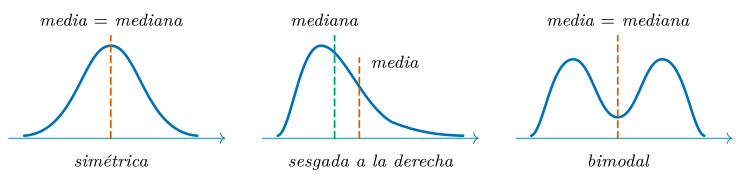
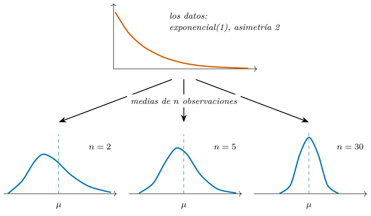
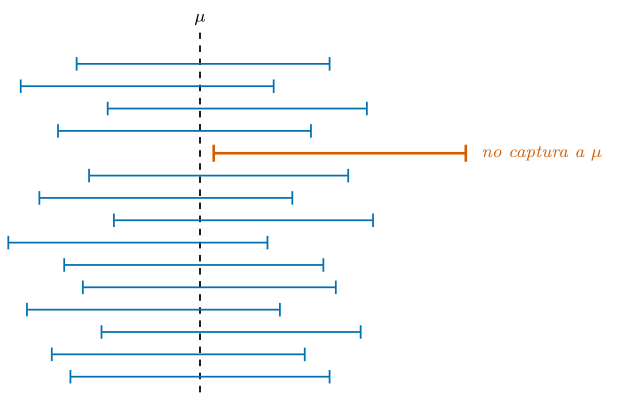
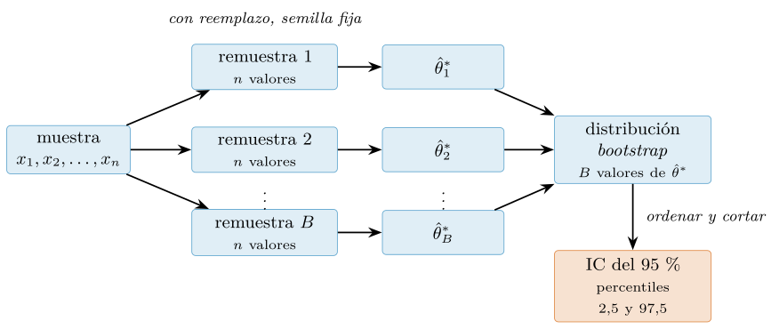
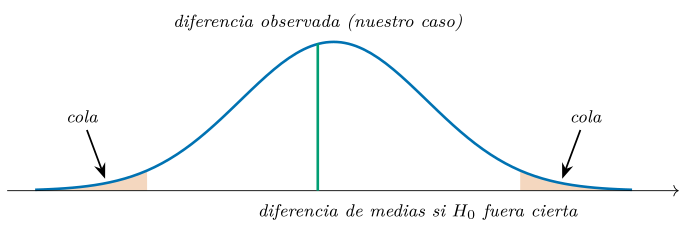

Capítulo 11. Estadística descriptiva, probabilidad e inferencia
▶ Ejecutar este capítulo en Binder
La primera vez que se abre, Binder construye el entorno en la nube (unos 10-20 min); verás una pantalla de progreso. Después queda en caché y abre en segundos. Si parece que no responde, espera a que termine de construirse o vuelve a intentarlo.
La estadística es el lenguaje en el que los datos hablan de la incertidumbre. El cap. 10 nos entregó un dataset del que por fin podemos fiarnos: las lecturas rotas marcadas como tales, los valores imposibles apartados, cada decisión anotada en su registro de limpieza. Pero un dato fiable todavía no dice nada: solo está en condiciones de que le preguntemos. ¿Qué tempo tienen las pistas del catálogo? ¿Cuánto varía de una canción a otra? Y, sobre todo: cuando dos números difieren —la media de las pistas explícitas y la del resto—, ¿esa diferencia cuenta algo del mundo o es el vaivén del azar? Distinguir la señal del ruido es el oficio de la estadística; este capítulo, nuestra caja de herramientas para ejercerlo.
Del cap. 10 quedaron, además, deudas impresas que aquí vencen: el porqué de que una pista lentísima «ni siquiera alcanza \(|z|=3\) aunque Tukey la señala» (§10.5.3); la versión estadística de la disciplina de declarar antes de mirar, con el contraste de hipótesis y sus trampas (§10.7); y la promesa de que estos estadísticos trabajarían sobre pistas válidas, no sobre lecturas rotas. Todo se paga en las páginas que siguen. Y una advertencia: esto no es un curso de estadística —hay grados enteros dedicados a ella—, sino lo que un programador de datos necesita para no engañarse (ni engañar): describir sin distorsionar, estimar reconociendo la incertidumbre y contrastar sabiendo qué puede afirmar un valor \(p\) y qué no.
El plan va en orden: describir una variable —centro, dispersión y forma— con los números que la resumen (§11.1); el idioma de la probabilidad (§11.2) y lo que el azar hace con las medias muestrales (§11.3); la estimación con intervalos de confianza (§11.4) y su versión por remuestreo (resampling), el bootstrap (§11.5); el contraste de hipótesis (§11.6) y el catálogo de sus abusos (§11.7); de cierre, un caso integrador que declara su predicción antes de mirar los datos (§11.8).
Describir: centro, dispersión y forma
Todo empieza por mirar una variable y resumirla con honradez. La materia prima es la del cap. 5: el catálogo de música (maharshipandya 2022) —114 mil pistas con sus rasgos de audio— ya curado por el cap. 10. El catálogo entero hace de población (conocemos su verdad porque lo tenemos completo, un lujo raro); de él tomamos una muestra de 3 000 pistas con semilla 42, la ventana con la que veremos bailar una estimación. Nuestra variable protagonista es el tempo, la velocidad en pulsaciones por minuto (BPM). Este primer listado es el contexto de todo el capítulo: cada sección dará por hecho que musica, muestra y tempo existen tal y como aquí se construyen.
import pandas as pd
musica = pd.read_parquet("data/processed/musica.parquet")
valido = musica[musica["tempo"] > 0] # descarta lecturas rotas
muestra = valido.sample(3000, random_state=42)
tempo = muestra["tempo"] # nuestra serie de trabajo
print(f"{len(musica)} pistas, {(musica['tempo'] == 0).sum()} rotas")
print(f"muestra: {len(tempo)} pistas")
# 113999 pistas, 157 rotas
# muestra: 3000 pistasLa línea que importa es la segunda: el filtro tempo > 0 deja fuera las 157 lecturas rotas del catálogo, pistas con un tempo de 0 BPM físicamente imposible (§10.4). No son valores, son la firma de un error, y la política de la §10.7 prohibió disfrazarlas de datos. Trabajamos sobre pistas válidas, no sobre lecturas rotas, como el cap. 10 prometió que estos estadísticos agradecerían: ninguna cifra de las que siguen debe nada a un valor imposible. De las \(113\,842\) pistas con tempo válido tomamos \(n = 3\,000\).
Centro y dispersión
La primera pregunta es dónde está el centro. La media muestral, \(\bar{x} = \frac{1}{n}\sum_{i} x_i\), reparte el total entre todas las mediciones; la mediana deja la mitad de los datos a cada lado. Son dos definiciones de «centro» y no tienen por qué coincidir. Entre ambas hay un camino intermedio, la media truncada (trimmed mean), que descarta una fracción de cada cola antes de promediar:
from scipy import stats
print(f"media: {tempo.mean():.2f}")
print(f"mediana: {tempo.median():.1f}")
print(f"truncada: {stats.trim_mean(tempo, 0.1):.2f}")
# media: 122.92
# mediana: 122.2
# truncada: 121.72Los tres centros casi coinciden: media 122,92, mediana 122,2 y media truncada al 10 % —trim_mean de scipy (SciPy developers, s. f.) recorta el 10 % más bajo y el 10 % más alto— en 121,72. Esa cercanía es información: no hay nada muy raro escondido en las colas; el porqué profundo —la forma— llegará en la §11.1.2. Cuando los centros divergen, la que se mueve es siempre la media: cada valor tira de ella en proporción a su magnitud, así que una cola larga o unos pocos atípicos la arrastran mientras la mediana, que solo cuenta posiciones, ni se inmuta. El cap. 10 lo midió (§10.5.3 y sus ejercicios): un único código centinela 9999 sin desenmascarar —un tempo imposible que se cuela como valor— subía esta media de 122,92 a 126,21 y disparaba la desviación típica de 30,4 a 182,8; la mediana seguía en 122,2. Informar solo de la media es apostar a que las colas se portan bien; la media truncada es el seguro barato, y comparar media con mediana, el diagnóstico más rápido que existe.
La segunda pregunta es cuánto se dispersa. La desviación típica muestral, \(s = \sqrt{\frac{1}{n-1}\sum_{i}(x_i - \bar{x})^2}\), mide la distancia típica al centro en las unidades del dato; su alternativa robusta es el rango intercuartílico (IQR), la anchura de la franja que contiene a la mitad central de los datos:
q1, q2, q3 = tempo.quantile([0.25, 0.50, 0.75])
print(f"desv. tipica: {tempo.std():.2f}")
print(f"cuartiles: {q1} | {q2} | {q3}")
print(f"IQR: {q3 - q1:.1f}")
# desv. tipica: 30.37
# cuartiles: 99.5 | 122.2 | 142.0
# IQR: 42.5Una pista cualquiera se aleja típicamente unos 30,4 BPM de la media, y la mitad central del catálogo vive entre 99,5 y 142,0: un IQR de 42,5. Los cuartiles forman, con el mínimo y el máximo, el resumen de cinco números de Tukey (1977), y heredan la robustez de la mediana: el 9999 de antes, que multiplicaba \(s\) por seis, los deja intactos. Conviene dar ambas medidas: si cuentan historias muy distintas, la distribución esconde algo.
La forma de la distribución
Centro y dispersión son dos números, y una distribución es una forma entera: simétrica o sesgada, de una moda o de varias, de colas ligeras o pesadas. Ningún número describe una forma, pero dos resúmenes ayudan a interrogarla: la asimetría (skewness), 0 en una distribución simétrica, positiva si la cola larga apunta a la derecha y negativa si apunta a la izquierda; y la curtosis (kurtosis), que compara el peso de las colas con el de una normal. scipy da la curtosis en exceso por defecto (fisher=True): una normal perfecta puntúa 0 en ambas (SciPy developers, s. f.).
print(f"asimetria: {stats.skew(tempo):.3f}")
print(f"curtosis: {stats.kurtosis(tempo):.3f}")
# asimetria: 0.329
# curtosis: -0.432Nuestro tempo es moderadamente simétrico —una cola derecha apenas más larga, la asimetría de 0,33— y de colas algo más ligeras que una normal (curtosis en exceso \(-0{,}43\)). Y aquí, con dato real, toca una honestidad que un dato fabricado ahorraría: no sabemos por qué tiene esta forma. Es plausible que la campana ancha del tempo salga de sumar convenciones de género, tradiciones rítmicas y modas —muchos efectos pequeños—, pero es una conjetura, no una receta escrita. El dato real no trae su verdad de fábrica; su forma hay que ganársela mirando, y por eso los resúmenes se acompañan siempre de un vistazo (cap. 12).
La forma, además, paga la primera deuda del capítulo. En la §10.5.3, las vallas de Tukey señalaban las pistas más lentas del catálogo como atípicas y, sin embargo, su puntuación \(z\) no llegaba a 3. La explicación: los cuartiles de una normal caen en \(\pm\,0{,}6745\,\sigma\), con lo que su IQR mide \(1{,}349\,\sigma\) y la valla de Tukey queda en \[0{,}6745\,\sigma + 1{,}5 \cdot 1{,}349\,\sigma = 2{,}698\,\sigma\] del centro: un listón más estricto que el \(\pm 3\sigma\) de la regla escolar. Comprobémoslo sobre el catálogo entero, donde la cola lenta sí tiene ejemplares:
t = valido["tempo"]
z = (35 - t.mean()) / t.std() # una pista lentisima, 35 BPM
q1p, q3p = t.quantile([0.25, 0.75])
valla = q1p - 1.5 * (q3p - q1p)
print(f"z de 35 BPM: {z:.3f}")
print(f"valla inferior de Tukey: {valla:.2f}")
print(f"valla en unidades z: {(valla - t.mean()) / t.std():.3f}")
# z de 35 BPM: -2.945
# valla inferior de Tukey: 38.46
# valla en unidades z: -2.828La valla empírica cae en \(-2{,}828\,\sigma\), cerca del \(-2{,}698\,\sigma\) teórico —algo más lejos porque el tempo se inclina a la derecha—. Y una pista de 35 BPM está a \(z = -2{,}945\): por debajo de la valla de Tukey (\(2{,}828 < 2{,}945\)), por encima del listón de las tres sigmas (\(2{,}945 < 3\)). Misterio resuelto, y con moraleja: las vallas de Tukey señalan aquí 470 pistas (el 0,41 %) aunque no haya nada raro que encontrar, mientras que \(\pm 3\sigma\) marca solo 46 —en una normal perfecta serían el 0,7 % y el 0,27 %; el tempo, de colas más ligeras, se queda por debajo de ambas—. Los umbrales no descubren atípicos: los definen, cada uno a su altura.
Queda la advertencia más célebre de la estadística descriptiva. Anscombe (1973) construyó cuatro datasets con la misma media, la misma varianza, la misma correlación y la misma recta de regresión: dibujados, son una nube lineal, una curva, una recta con un atípico y una columna vertical. Cuarenta y tres años después, Alberto Cairo dibujó un dinosaurio con la consigna «never trust summary statistics alone; always visualize your data», y Matejka y Fitzmaurice (2017) lo convirtieron en la «docena del datasaurus»: trece nubes —un dinosaurio, una estrella, dos elipses...— con idénticas medias, desviaciones y correlación hasta el segundo decimal. La figura 11.1 resume la versión mansa del problema. Contra esto solo hay una defensa, que es mirar: el histograma y los demás gráficos de distribución llegarán con el cap. 12. Adelantamos una sola decisión, más estadística que gráfica: el número de intervalos (bins). NumPy la automatiza con bins="auto", que elige el más fino entre la regla de Sturges y una versión acotada de la de Freedman–Diaconis —basada, no por casualidad, en el IQR—; para nuestro tempo, Sturges propone 13 intervalos y "auto" se queda con 30, bastante más reveladores con tres mil pistas.

Probabilidad: el idioma de la incertidumbre
En la sección anterior (§11.1) resumimos los datos que tenemos: medias, cuartiles, dispersión, forma. Pero lo observado es solo una de las versiones que pudieron salir: con otra semilla, nuestra muestra habría recogido otras 3 000 pistas y la media no valdría 122,92, sino algo parecido pero distinto. El catálogo entero, en cambio, tiene una media fija —la de su población— que conocemos por tenerlo completo. La probabilidad es el idioma con el que se habla con precisión de ese baile: de lo que pudo ocurrir, de lo plausible y de lo sorprendente. No condensaremos aquí un curso de teoría de la probabilidad; nos quedamos con lo que un programador de datos necesita para plantear un modelo, simularlo y contrastarlo con sus datos, que es lo que haremos el resto del capítulo.
Variables aleatorias
La probabilidad cuantifica la incertidumbre: asigna a cada suceso un número entre 0 y 1 que mide cuán verosímil es. Antes de sacar una pista al azar del catálogo no sabemos qué tempo tendrá; sí sabemos, si conocemos el proceso, que alrededor de 120 BPM es terreno corriente y por encima de 200, el extremo veloz. Esa gradación de lo plausible es lo que aporta un modelo probabilístico.
El objeto central del idioma es la variable aleatoria (random variable): una regla que asigna un número al resultado de un fenómeno incierto. La escribimos con mayúscula, \(X\), mientras el resultado sigue abierto; cuando ocurre y deja un dato concreto, en minúscula: \(x = 118{,}7\). La distinción parece pedante y es imprescindible: las 3 000 pistas de la muestra que describimos en §11.1 son minúsculas, realizaciones ya materializadas; el modelo que las explica habla de la mayúscula. Lo que caracteriza a \(X\) es su distribución: el catálogo de valores que puede tomar y con qué probabilidad toma cada uno.
Ese catálogo adopta dos formas. Una variable discreta toma valores contables —cuántas pistas de una lista superan un umbral de tempo, cuántas rapidísimas trae un género— y se describe con la función de masa de probabilidad (probability mass function, pmf): \(p(x) = P(X = x)\), una probabilidad por valor posible, y todas suman 1. Una variable continua puede tomar cualquier valor de un intervalo, y ahí el catálogo punto a punto se desmorona: entre 118 y 119 caben infinitos valores, y si cada uno recibiera probabilidad positiva la suma sería infinita. La salida es asignar probabilidad cero a cada valor exacto —\(P(X = x) = 0\) para todo \(x\), por chocante que suene— y repartirla mediante una densidad: la función de densidad de probabilidad (probability density function, pdf) \(f(x)\) mide probabilidad por unidad de valor, y las probabilidades de verdad son áreas bajo la curva: \[P(a < X \le b) = \int_a^b f(x)\,dx.\] Una densidad no es una probabilidad y puede superar 1 —la uniforme sobre \([0,\,0{,}5]\) vale 2—; solo las áreas deben quedarse entre 0 y 1. Una confesión: nuestro tempo, redondeado, es en rigor discreto; lo modelamos como continuo porque la rejilla es tan fina que la distinción no cambia nada. Elegir entre discreto y continuo es una decisión de modelado que se declara y se revisa.
Hay una función que unifica ambos mundos: la función de distribución acumulada (cumulative distribution function, CDF), \(F(x) = P(X \le x)\), definida igual para discretas y continuas. Crece de 0 a 1, responde por resta a cualquier pregunta de intervalo —\(P(a < X \le b) = F(b) - F(a)\)— y su inversa devuelve cuantiles: la versión teórica de los percentiles que calculamos en §11.1. scipy la llama cdf, y a su inversa ppf (percent point function).
Los resúmenes numéricos también tienen su versión teórica. La esperanza \(\mathbb{E}[X]\) es el centro de gravedad de la distribución, \[\mathbb{E}[X] = \sum_x x\,p(x) \qquad\text{o}\qquad \mathbb{E}[X] = \int x\,f(x)\,dx,\] y la varianza \(\Var[X] = \mathbb{E}\!\left[(X - \mathbb{E}[X])^2\right]\) mide la dispersión en torno a él; su raíz cuadrada es la desviación típica del modelo, \(\sigma\). La media y la varianza muestrales de §11.1 son sus dobles empíricos: mismas ideas, objetos distintos —unos resumen el modelo; los otros, los datos—. Para el tempo del catálogo, \(\mathbb{E}[X] = 122{,}32\) y \(\sigma \approx 29{,}65\) (los de la población, que conocemos); la muestra respondió con 122,92 y 30,37: cerca, pero no igual. En qué sentido se acercan cuando crecen los datos lo veremos en §11.3.
Las distribuciones que aparecen una y otra vez
En la práctica no hay que inventar distribuciones: unas pocas familias cubren la inmensa mayoría de los fenómenos que un analista modela. El módulo scipy.stats (Virtanen et al. 2020; SciPy developers, s. f.) implementa más de un centenar con una interfaz uniforme —pdf o pmf, cdf, ppf y rvs para simular—: aprender a manejar una es aprenderlas todas. La tabla 11.1 adelanta las cinco que nos acompañarán, con su encarnación en el catálogo del libro.
| Distribución | Qué modela | Parámetros | Ejemplo en el catálogo |
|---|---|---|---|
| Normal | suma de muchos efectos pequeños e independientes | \(\mu\) (media), \(\sigma\) (desv. típica) | el tempo del catálogo: \(\mu = 122\), \(\sigma = 30\) |
| Binomial | número de éxitos en \(n\) ensayos independientes | \(n\), \(p\) | pistas rápidas en una lista de 20 |
| Poisson | conteos de eventos raros por unidad de conteo | \(\lambda\) (tasa media) | pistas rapidísimas por género de mil |
| Uniforme | valores equiprobables en un intervalo | \(a\), \(b\) | la salida cruda del generador del cap. 7 |
| Exponencial | tiempos de espera entre eventos raros | escala \(1/\lambda\) | banco asimétrico de pruebas del TCL (§11.3) |
La reina es la normal o gaussiana: la campana simétrica que surge, por una razón profunda que demostraremos empíricamente en §11.3 —el teorema central del límite (central limit theorem, TCL)—, allí donde una magnitud suma muchos efectos pequeños e independientes. La determinan dos parámetros: la media \(\mu\) y la desviación típica \(\sigma\). Y aquí, con el catálogo entero delante, podemos hacer algo honesto: proponer un modelo normal ajustado a la población —la media y la desviación del catálogo, \(\mu = 122{,}32\) y \(\sigma \approx 29{,}65\) BPM— y comprobar hasta dónde cuadra con los datos. El tempo real no es normal por decreto —lo vimos en §11.1.2: una cola derecha algo más larga—; es aproximadamente normal, y solo poniendo modelo y datos lado a lado sabremos dónde acierta y dónde no. Preguntemos a ambos por la cola alta:
import numpy as np
import pandas as pd
from scipy import stats
musica = pd.read_parquet("data/processed/musica.parquet")
poblacion = musica.loc[musica["tempo"] > 0, "tempo"] # 113842
# modelo normal ajustado a la poblacion
modelo = stats.norm(poblacion.mean(), poblacion.std())
p_modelo = 1 - modelo.cdf(201)
p_datos = (poblacion > 201).mean()
print(f"P(X > 201) bajo el modelo: {p_modelo:.4f}")
print(f"frecuencia observada: {p_datos:.4f}")
# P(X > 201) bajo el modelo: 0.0040
# frecuencia observada: 0.0040El umbral no es casual: 201 BPM era la valla superior de Tukey que en el cap. 10 señalaba las pistas más veloces como candidatas a atípicas. El modelo reparte un 0,40 % de su probabilidad por encima de 201 —unas 450 pistas de \(113\,842\)—; los datos traen 461, un 0,40 % clavado. Cuadran casi al decimal, y la lectura completa el matiz del capítulo anterior: la cola de una campana no está vacía, y unos centenares de valores altos entre más de cien mil no son una anomalía, sino el peaje esperado. Nótese el filtro tempo > 0: descarta las 157 rotas y trabajamos sobre pistas válidas, no sobre lecturas imposibles, como prometimos en el cap. 10. La misma cdf responde cualquier otra pregunta, y su inversa ppf la recorre al revés:
print(f"cdf(122.32) = {modelo.cdf(122.32):.2f}")
# cdf(122.32) = 0.50
print(f"P(90 < X <= 150) = {modelo.cdf(150) - modelo.cdf(90):.4f}")
# P(90 < X <= 150) = 0.6868
print(f"ppf(0.95) = {modelo.ppf(0.95):.2f}")
# ppf(0.95) = 171.09La media coincide con la mediana del modelo (cdf(122.32) vale 0,50); el modelo espera algo más de dos tercios de las pistas entre 90 y 150, y los datos responden con un 68 %; y el percentil 95 teórico, 171, ronda el empírico, 175 —la pequeña diferencia es esa cola derecha que la §11.1.2 detectó, que el modelo normal no llega a capturar del todo—. ppf(0.95) invierte la CDF: es la versión teórica del quantile que aplicamos a los datos en §11.1.
La binomial cuenta éxitos: si un experimento se repite \(n\) veces de forma independiente y cada repetición «acierta» con probabilidad \(p\), el número de aciertos sigue una binomial de parámetros \(n\) y \(p\). Llamemos rápida a una pista con tempo por encima de 150 BPM: bajo el modelo, \(p = 0{,}1753\). Una lista de reproducción de \(n = 20\) pistas sacadas al azar del catálogo las trae independientes —el sorteo garantiza lo que en una lista curada no se cumpliría—, así que el número de pistas rápidas de la lista es binomial:
p = 1 - modelo.cdf(150) # P(que una pista supere 150 BPM)
print(f"p = {p:.4f}")
# p = 0.1753
print(f"P(justo 4 rapidas) = {stats.binom.pmf(4, 20, p):.4f}")
# P(justo 4 rapidas) = 0.2095
print(f"P(mas de 7) = {1 - stats.binom.cdf(7, 20, p):.4f}")
# P(mas de 7) = 0.0152La esperanza de una binomial es \(np = 20 \cdot 0{,}1753 = 3{,}51\) pistas rápidas por lista; el recuento empírico en listas de 20 pistas al azar da 3,50, y coincide porque comparten la \(p\) que verificamos arriba (\(0{,}1753\) del modelo, \(0{,}1749\) del dato). Y la probabilidad de una lista con más de siete pistas rápidas ronda el 1,5 %: rara, pero no imposible. Otra vez el modelo y el dato se dan la mano.
Cuando los eventos son raros y se cuenta cuántos caen en una unidad de conteo, la binomial se desliza hacia la Poisson: su límite con \(n\) grande y \(p\) minúsculo, gobernado por un único parámetro, la tasa media \(\lambda = np\). Es la ley de los conteos raros: llamadas por minuto, erratas por página o, en nuestro catálogo, pistas rapidísimas —por encima de la valla de Tukey, 201 BPM— en un género de mil:
p201 = 1 - modelo.cdf(201) # probabilidad de una rapidisima
lam = 1000 * p201 # un genero tiene ~1000 pistas
print(f"lambda = {lam:.3f}")
# lambda = 3.984
print(f"P(ninguna rapidisima) = {stats.poisson.pmf(0, lam):.3f}")
# P(ninguna rapidisima) = 0.019
print(f"P(exactamente 1) = {stats.poisson.pmf(1, lam):.3f}")
# P(exactamente 1) = 0.074El modelo espera unas cuatro rapidísimas por género de mil, y casi ningún género se queda sin ninguna (\(P(0) = 0{,}019\)). Los datos traen 461 rapidísimas repartidas en 114 géneros: 4,04 de media, otra vez pegado al \(\lambda = 3{,}98\) que el modelo predijo. De nuevo, coherente.
Quedan dos miembros de la tabla. La uniforme reparte la misma densidad sobre un intervalo \([a, b]\): ningún valor está favorecido. Ya la conocimos sin nombrarla: es lo que produce rng.random(), la materia prima del generador del cap. 7 (§7.5.3) de la que se fabrican, por transformación, todas las demás. La exponencial modela tiempos de espera entre eventos raros —cuánto se tarda hasta el siguiente— y es descaradamente asimétrica: muchos tiempos cortos, alguna espera enorme. La hemos sentado a la mesa por eso: en §11.3 será la protagonista de la demostración empírica del TCL, porque ver salir una campana de la distribución que menos se le parece hace creíble el teorema.
Falta el cuarto verbo de la interfaz: rvs (random variates) simula extracciones de la distribución, y acepta el Generator con semilla que venimos usando desde el cap. 7, con la reproducibilidad prometida:
rng = np.random.default_rng(2026)
sim = stats.norm.rvs(122.32, 29.65, size=5, random_state=rng)
print(np.round(sim, 1))
# [ 98.8 129.4 66.1 163.7 141.2]
rng = np.random.default_rng(2026) # misma semilla
print(np.round(rng.normal(122.32, 29.65, size=5), 1))
# [ 98.8 129.4 66.1 163.7 141.2]Las dos tiradas son idénticas: scipy.stats delega el azar en el mismo Generator de NumPy, así que elegir uno u otro es cuestión de comodidad —rvs gana cuando la distribución no tiene método propio— y la semilla declarada sigue mandando.
Hagamos balance, porque esta sección puede parecer un desvío teórico y es lo contrario. La lección es práctica: la incertidumbre no es un defecto que ocultar, sino una propiedad que cuantificar. Un modelo probabilístico convierte «la media es 122,92» en una afirmación con alcance, porque permite preguntar cuánto habría variado ese número si el azar hubiera repartido otras cartas; un resultado sin su margen de error está incompleto y, a menudo, es engañoso. Aquí hemos jugado con ventaja: teníamos la población entera y comprobamos que el modelo normal cuadraba en el grueso —cola alta, listas rápidas y géneros incluidos— aunque flaquease en el extremo del percentil 95. Con solo una muestra esa comprobación no existe (las formas de asomarse a ella las dibujaremos en el cap. 12). Responder algo honesto sobre lo que no se ve, con lo poco que se ve, es el oficio de la inferencia: en §11.3 veremos cuánto baila un estadístico de muestra en muestra, y cómo ponerle a ese baile un número.
Del azar a la muestra: los dos teoremas que lo sostienen todo
La estadística distingue dos objetos que el lenguaje corriente confunde: la población, el conjunto completo de valores sobre el que queremos afirmar algo, y la muestra, el subconjunto que de verdad tenemos delante. Casi nunca tenemos la población. Nadie cataloga toda la música que existe; se recoge una parte, y con ella se pretende hablar de las demás. La muestra es una ventana a la población, pero una ventana de vidrio rugoso: deja pasar la forma general y le añade el grano del azar. Dos muestras del mismo proceso darán medias distintas, y ninguna coincidirá exactamente con la media «verdadera». Razonar a través de ese vidrio —qué puede afirmarse de la población viendo solo la muestra, y con cuánta seguridad— es el oficio de la inferencia, y los dos teoremas de esta sección son sus cimientos.
El punto de partida clásico es el supuesto de muestreo aleatorio: cada observación se modela como una variable aleatoria con la distribución de la población, independiente de las demás e idénticamente distribuida. El supuesto no es decorativo: es lo que convierte la inferencia en cálculo. Si sabemos qué azar generó la muestra, podemos deducir cómo se comportan los estadísticos calculados sobre ella —cuánto bailan de muestra en muestra, y alrededor de qué— sin necesidad de ver más muestras que la nuestra.
Conviene ser honestos sobre cuánto de ese supuesto cumple nuestro caso (maharshipandya 2022). A diferencia de un censo, nuestras 3 000 pistas sí son una muestra aleatoria del catálogo (semilla 42), así que el supuesto de muestreo aleatorio se cumple aquí mejor de lo habitual. Ahora bien, el catálogo mismo no es una muestra aleatoria de «toda la música»: está armado por géneros, con mil pistas de cada uno, y esa curaduría es una población concreta, no el universo musical. La ventaja de este capítulo es doble: tenemos la población entera —las \(113\,842\) pistas válidas—, de modo que conocemos su verdad (la media 122,32, por ejemplo) y podremos comparar lo que la muestra estima con lo que la población guarda. Por eso, para ver funcionar los dos teoremas, ni siquiera usaremos la muestra: simularemos con el generador de números aleatorios del cap. 7 (§7.5.3) poblaciones cuya verdad conocemos por construcción, y observaremos a la muestra acercarse a ella.
La ley de los grandes números
El primer teorema responde a la pregunta más básica del oficio: ¿por qué promediar funciona? La ley de los grandes números garantiza que, si las observaciones son independientes y comparten una distribución de esperanza \(\mu = \mathbb{E}[X]\), la media muestral \(\bar{x}_n\) converge a \(\mu\) cuando \(n\) crece. Dicho sin símbolos: con datos suficientes, la media de lo que vemos acaba arbitrariamente cerca de la media de lo que hay. Es la licencia que autoriza a estimar; sin ella, calcular medias sería numerología.
Para verla trabajar elegimos a propósito una distribución antipática: la exponencial de esperanza 1, asimétrica, con la moda pegada al cero y una cola larga hacia la derecha; nada que se parezca a una campana. La simulación cabe en unas pocas líneas de NumPy:
import numpy as np
rng = np.random.default_rng(2026) # el Generator del cap. 7
x = rng.exponential(scale=1.0, size=10_000) # esperanza: 1
acumulada = np.cumsum(x) / np.arange(1, x.size + 1)
for n in (10, 100, 10_000):
print(f"n={n:>6}: media acumulada = {acumulada[n - 1]:.3f}")
# n= 10: media acumulada = 0.743
# n= 100: media acumulada = 1.231
# n= 10000: media acumulada = 1.020
print(f"error tras 10000 valores: {abs(acumulada[-1] - 1):.4f}")
# error tras 10000 valores: 0.0204La convergencia es real, pero poco triunfal. Con diez valores la media acumulada se queda en 0,743, un 26 % por debajo de la verdad; con cien está en 1,231, cruzada al otro lado y todavía desviada un 23 %; hacen falta los diez mil para plantarse en 1,0204, y aún con un 2 % de error. Obsérvese además que el camino no es monótono: entre \(n=10\) y \(n=100\) la media no «mejoró», cambió de lado. El teorema habla del límite, no del trayecto.
La lección tiene números: el ruido de la media decrece como \(1/\sqrt{n}\) —enseguida veremos por qué—, de modo que dividir el error entre diez exige multiplicar los datos por cien. Por eso «\(n\) grande» no es un eslogan que se pronuncia, sino un coste que se paga: la garantía de la ley es asintótica, no mágica, y ningún tamaño muestral finito la convierte en exactitud.
El teorema central del límite
La ley de los grandes números dice adónde va la media; el teorema central del límite (central limit theorem, TCL) dice cómo se reparte alrededor mientras llega. Su enunciado roza lo milagroso: si las observaciones son independientes, comparten distribución y su varianza \(\sigma^2\) es finita, la distribución de la media de \(n\) de ellas se aproxima, al crecer \(n\), a una normal, \[\bar{X}_n \;\approx\; \mathcal{N}\!\bigl(\mu,\ \sigma^2/n\bigr),\] sea cual sea la forma de la distribución original. Los datos pueden ser sesgados, discretos o bimodales; sus promedios, con \(n\) suficiente, dibujan la campana.
También esto se deja ver simulando, y el metro adecuado es la asimetría. La exponencial de esperanza 1 tiene asimetría teórica 2; si el TCL actúa, la asimetría de las medias de \(n\) observaciones debe caer hacia el 0 de la normal, y la teoría precisa el ritmo: \(2/\sqrt{n}\). Generamos 10 000 medias para cada \(n\) y medimos con stats.skew (SciPy developers, s. f.):
from scipy import stats
rng = np.random.default_rng(2026)
for n in (2, 5, 30):
medias = rng.exponential(scale=1.0,
size=(10_000, n)).mean(axis=1)
print(f"n={n:>2}: asimetria = {stats.skew(medias):.2f} "
f"(teorica: {2 / n**0.5:.2f})")
# n= 2: asimetria = 1.41 (teorica: 1.41)
# n= 5: asimetria = 0.91 (teorica: 0.89)
# n=30: asimetria = 0.41 (teorica: 0.37)La normalización progresiva está en la columna de cifras: 1,41 con \(n=2\), 0,91 con \(n=5\), 0,41 con \(n=30\), siempre pegadas al \(2/\sqrt{n}\) teórico (1,41, 0,89, 0,37). La pequeña discrepancia en \(n=30\) no es un fallo del teorema, sino una moraleja gratis: la asimetría también se estima, y hasta con 10 000 medias el estimador trae su propio ruido. La figura 11.2 resume el fenómeno: la población sesgada arriba y, debajo, unas distribuciones de medias cada vez más estrechas, más simétricas, más normales.
Para quien programa con datos, el TCL es una póliza: los promedios se comportan bien aunque los datos no. No hace falta que el tempo de una pista sea normal para razonar sobre la media de un género; basta con que las observaciones sean razonablemente independientes y de varianza finita. Y el teorema no solo da la forma del ruido de la media: da su tamaño. La desviación típica de la media muestral vale \(\sigma/\sqrt{n}\), una cantidad con nombre propio: el error estándar (standard error) —y aquí sí decimos «estándar», que es el nombre consagrado—. El error estándar es la escala a la que la media baila de muestra en muestra: con la exponencial de \(\sigma = 1\) y \(n = 30\), vale \(1/\sqrt{30} \approx 0{,}18\). El \(\sqrt{n}\) del denominador es la ley de rendimientos decrecientes del muestreo: cuadruplicar los datos solo divide el error entre dos, y ese arancel gobierna cuánto cuesta la precisión en todo lo que sigue (James et al. 2023).

Los dos teoremas se reparten el trabajo que viene. La ley de los grandes números garantiza que estimar tiene sentido: la media muestral apunta al lugar correcto. El teorema central del límite da la forma y la escala del error que cometemos por el camino: normal, con anchura \(\sigma/\sqrt{n}\). Sobre esas dos piezas descansa la inferencia clásica —los intervalos que acompañan a una estimación y los contrastes que juzgan diferencias— que abordamos a continuación (§11.4).
Estimar con honestidad: del punto al intervalo
Hasta aquí hemos mirado hacia dentro de la muestra: la describimos con sus resúmenes (§11.1) y estudiamos cómo se comporta el azar cuando se agrega (§11.3.2). Esta sección da el salto que convierte la descripción en inferencia: usar lo observado para afirmar algo sobre lo que no observamos. Y quiere darlo con la disciplina que el cap. 1 llamó estadística honesta y que la política de limpieza del cap. 10 (§10.7) nos dejó como encargo: aprender a decir cuánto puede afirmar un número, ni más ni menos. El resumen por adelantado: un número suelto afirma muy poco; un número acompañado de su incertidumbre, bastante más.
Estimadores
Un estimador es una receta: una función que toma la muestra y devuelve un número con el que aspiramos a aproximar una cantidad de la población que no podemos medir entera. La media muestral \(\bar{x}\) es la receta más famosa: estima la media poblacional \(\mu\). Volvamos al catálogo de música con el que trabaja todo el capítulo (maharshipandya 2022), del que tomamos 3 000 pistas con semilla 42, y a su columna de tempo:
import numpy as np
import pandas as pd
from scipy import stats
musica = pd.read_parquet("data/processed/musica.parquet")
valido = musica[musica["tempo"] > 0]
muestra = valido.sample(3000, random_state=42)
tempo = muestra["tempo"]
print(f"n = {len(tempo)}, media muestral = {tempo.mean():.2f}")
# n = 3000, media muestral = 122.92Ese 122,92 es una estimación puntual. Aquí gozamos de un lujo didáctico: conocemos la verdad de la población, cuya media es 122,32, porque tenemos el catálogo entero; el analista con una sola muestra no la tiene. Y aun sabiéndola, conviene notar lo evidente: la receta no devolvió 122,32, sino 122,92, porque opera sobre una muestra concreta. Otra muestra de 3 000 pistas daría 122,5, o 123,1. Un valor puntual sin incertidumbre es frágil: no dice cuánto podría haberse movido, y quien lo lee tiende a tomarlo por la verdad con dos decimales.
Para comparar recetas, la estadística mira dos propiedades. El sesgo pregunta si el estimador acierta en promedio: si repitiéramos el muestreo muchas veces, ¿la media de las estimaciones sería la cantidad buscada (\(\mathbb{E}[\hat\theta] = \theta\)) o quedaría desviada de forma sistemática? La varianza pregunta cuánto baila la estimación de muestra a muestra, incluso sin sesgo alguno. Un buen estimador combina poco sesgo con poca varianza, y a menudo hay que canjear una cosa por otra (James et al. 2023). El ejemplo clásico no exige teoría, sino diez líneas de simulación: en una distribución simétrica, la mediana muestral también estima el centro \(\mu\); ¿es entonces tan buena receta como la media? Fabriquemos 10 000 muestras en miniatura —de tamaño 100 de una normal con la media 122 y la desviación típica 30 de nuestro tempo— y apliquemos ambas recetas a cada una, con el generador con semilla que aprendimos en §7.5.3:
rng = np.random.default_rng(2026)
muestras = rng.normal(122, 30, size=(10_000, 100))
medias = muestras.mean(axis=1)
medianas = np.median(muestras, axis=1)
print(f"medias: {medias.mean():.2f} +- {medias.std(ddof=1):.3f}")
print(f"medianas: {medianas.mean():.2f} +- {medianas.std(ddof=1):.3f}")
# medias: 122.00 +- 2.956
# medianas: 121.97 +- 3.712Las dos recetas aciertan en promedio —122,00 y 121,97: ambas prácticamente insesgadas—, pero no con la misma firmeza: las medianas se dispersan en torno a un 26 % más que las medias. Sobre datos normales, la media es el estimador más eficiente del centro; la mediana paga su robustez —la que apreciamos en el cap. 10 frente a valores atípicos— con más varianza cuando no hay atípicos que resistir. No hay receta gratis: elegir estimador es elegir qué riesgo se prefiere.
El sesgo, además, ya nos había visitado de incógnito: el ddof=1 que arrastramos desde §11.1 es exactamente una corrección de sesgo. La varianza calculada con \(n\) en el denominador subestima sistemáticamente \(\sigma^2\), porque mide las desviaciones respecto de \(\bar{x}\) —que está, por construcción, en el centro de la muestra— y no respecto de la \(\mu\) verdadera; dividir por \(n-1\) compensa esa ventaja y hace insesgada la varianza muestral \(s^2\). (La desviación típica \(s\) hereda todavía un sesgo residual minúsculo; con \(n = 3\,000\) es irrelevante.)
El intervalo de confianza
Si la estimación puntual baila de muestra a muestra, la afirmación honesta no es un punto sino un rango: el intervalo de confianza (confidence interval, IC). Su construcción clásica es cosecha directa del teorema central del límite que vimos en §11.3.2: la media muestral se distribuye de forma aproximadamente normal alrededor de \(\mu\), con una desviación típica que es el error estándar, \(\sigma/\sqrt{n}\). En una normal, el 95 % de la masa cae a menos de \(1.96\) desviaciones del centro —norm.ppf(0.975)—, de modo que, sustituyendo la \(\sigma\) desconocida por la \(s\) de la muestra, \[\mathrm{IC}_{95} \;=\; \bar{x} \,\pm\, 1.96 \cdot \mathrm{EE},
\qquad \mathrm{EE} = \frac{s}{\sqrt{n}}.\] Sobre el tempo de la muestra, la fórmula cabe en tres líneas:
n = len(tempo)
ee = tempo.std(ddof=1) / np.sqrt(n) # error estandar
ic = (tempo.mean() - 1.96 * ee, tempo.mean() + 1.96 * ee)
print(f"EE = {ee:.3f}") # EE = 0.555
print(f"IC 95% = [{ic[0]:.1f}, {ic[1]:.1f}]")
# IC 95% = [121.8, 124.0]Con tres mil pistas, el error estándar es de 0,555 y el intervalo resulta estrecho: entre 121,8 y 124,0. La media muestral está bien clavada —y, en efecto, el 122,32 de la población queda dentro—. Obsérvese la mecánica del \(\sqrt{n}\): para estrechar el intervalo a la mitad no basta el doble de datos, hacen falta cuatro veces más.
¿Y si la muestra es pequeña? Con \(n\) modesto, la \(s\) que ponemos en lugar de \(\sigma\) es a su vez una estimación insegura, y fingir que vale la constante \(1.96\) es optimismo. Quien puso precio a ese optimismo fue William Sealy Gosset, químico de la cervecera Guinness en Dublín que analizaba lotes de cebada y levadura con muestras minúsculas. Como la empresa no permitía a sus empleados publicar, firmó con seudónimo, y su distribución pasó a la historia como la \(t\) de Student (Student 1908). La receta: con \(n\) observaciones, cambiar el cuantil de la normal por el de una \(t\) con \(n-1\) grados de libertad, disponible en scipy.stats (SciPy developers, s. f.):
print(f"{stats.norm.ppf(0.975):.4f}") # 1.9600
print(f"{stats.t.ppf(0.975, 10):.4f}") # 2.2281
print(f"{stats.t.ppf(0.975, 30):.4f}") # 2.0423
print(f"{stats.t.ppf(0.975, 2999):.4f}") # 1.9608Con once observaciones (diez grados de libertad), el multiplicador sube de 1,96 a 2,2281: un intervalo un 14 % más ancho. Esas colas anchas de la \(t\) son el precio, en unidades de intervalo, de la incertidumbre extra por estimar \(\sigma\) desde tan poco. Y el precio se extingue con los datos: con los \(2\,999\) grados de libertad de nuestra muestra, la \(t\) devuelve 1,9608 y la distinción con la normal es ya cosmética.
Queda lo más delicado: qué afirma exactamente ese «95 %». Léase con lupa, porque es quizá la frase peor interpretada de toda la estadística: el 95 % es una propiedad del método, no de este intervalo. La media \(\mu\) no es aleatoria: es un número fijo, aunque desconocido. Lo aleatorio es el intervalo, que se construyó a partir de una muestra sorteada. Nuestro intervalo concreto, de 121,8 a 124,0, contiene a \(\mu\) o no la contiene; ya no hay sorteo pendiente ni probabilidad que repartir. Lo que vale un 95 % es la tasa de aciertos del procedimiento: de cada cien intervalos construidos así, sobre cien muestras distintas, esperamos que unos noventa y cinco capturen a \(\mu\). Simular desde una normal de verdad conocida permite comprobarlo, porque —a diferencia del mundo— nos deja fijar la verdad de antemano:
rng = np.random.default_rng(2026)
aciertos = 0
for _ in range(100):
m = rng.normal(122, 30, size=100) # mu = 122, conocida
ee = m.std(ddof=1) / np.sqrt(100)
lo, hi = m.mean() - 1.96 * ee, m.mean() + 1.96 * ee
aciertos += lo <= 122 <= hi
print(f"contienen mu = 122: {aciertos} de 100")
# contienen mu = 122: 99 de 100Noventa y nueve de cien: compatible con la promesa del 95 % (la propia cuenta de aciertos es aleatoria; otra semilla daría 94 o 96). El intervalo que falló no tiene nada de defectuoso: se calculó con la misma fórmula que los demás sobre una muestra legítimamente rara. La figura 11.3 resume la idea completa en un dibujo que conviene guardar en la retina.

Conviene entonces dejar por escrito qué compra la palabra «confianza» y qué no:
No significa que \(\mu\) esté entre 121,8 y 124,0 con probabilidad 0,95: \(\mu\) no tiene probabilidad, tiene un valor; el que tenía probabilidades era el intervalo antes de calcularse.
No significa que el 95 % de las pistas caiga en ese rango: los tempos individuales se despliegan con la desviación típica completa, 30,37, y desbordan de sobra un intervalo de un par de BPM. El IC habla de la media, no de los datos.
Significa que el procedimiento que lo produjo captura el valor verdadero en el 95 % de sus aplicaciones. La confianza se deposita en el método, y por eso puede declararse antes de mirar los datos.
Este intervalo analítico descansa sobre supuestos que aquí se cumplen con holgura: un estimador dócil como la media, un tamaño muestral que activa el teorema central del límite y un error estándar con fórmula cerrada. Pero no siempre querremos comprarlos. Para la mediana, para un cuantil alto, para un coeficiente cualquiera —o para una muestra de la que desconfiamos—, el remuestreo del §11.5 construirá el intervalo sin pedir permiso a ninguna fórmula: la misma honestidad, con menos supuestos.
El bootstrap: la incertidumbre por fuerza bruta
El intervalo analítico de la sección anterior tiene un punto débil que conviene confesar: depende de una fórmula. Para la media disponemos de una excelente —el teorema central del límite la respalda—, pero ¿y si el estadístico que nos importa es la mediana? ¿O el percentil 95, que en el catálogo interesa porque señala el umbral de las pistas más veloces? Para muchos estadísticos no existe una fórmula cómoda del error estándar, y para otros existe pero exige supuestos que nadie comprueba. La alternativa moderna renuncia a la fórmula y compra la respuesta con computación: remuestrear, recalcular y mirar. Es el bootstrap, y es probablemente la idea estadística más importante de la era del ordenador barato.
La idea
El problema de fondo es siempre el mismo: nuestra estimación —la media de las 3 000 pistas de la muestra— habría salido distinta con otra muestra, y para acompañarla de un margen honesto necesitamos saber cuánto distinta. Lo ideal sería tomar mil muestras nuevas de la población y ver cómo baila la media entre ellas; pero no hay mil muestras, hay una. La ocurrencia de Brad Efron, publicada en 1979 con el modesto título de «otra mirada al jackknife», fue usar la variabilidad interna de la muestra como sustituto de la variabilidad de la población que no vemos (Efron 1979): tratar la muestra como si fuera la población, extraer de ella muestras artificiales —remuestras— y observar cómo varía el estadístico entre ellas.
La receta cabe en tres líneas. Primero, generar una remuestra: \(n\) valores extraídos de la muestra original con reemplazo, de modo que un mismo valor puede salir dos o tres veces y otros no salir ninguna. Segundo, calcular sobre ella el estadístico de interés. Tercero, repetir el proceso \(B\) veces —miles— y quedarse con la distribución de los \(B\) resultados: su dispersión estima el error estándar, y sus percentiles 2,5 y 97,5 delimitan un intervalo de confianza del 95 %. El reemplazo no es un detalle: sin él, cada remuestra sería la muestra original desordenada y el estadístico no variaría nada. Con él, cada remuestra deja fuera en promedio un 36,8 % de las observaciones —la fracción \((1-1/n)^n \approx e^{-1}\)— y duplica otras, y de ese sorteo nace exactamente la variabilidad que buscamos.
¿Por qué funciona esta aparente trampa de sacarse muestras de la manga? Por el principio de sustitución (plug-in principle): no conocemos la distribución de la población, pero la muestra —su distribución empírica— es la mejor aproximación de ella que poseemos, y muestrear con reemplazo la muestra es, literalmente, muestrear esa aproximación. El bootstrap no inventa información: reutiliza la que la muestra ya contiene, que para \(n\) grande es mucha.
Hay además una deuda que saldar: el capítulo 1 prometió un bootstrap reproducible con semilla fija, y el capítulo 7 nos dejó la herramienta (§7.5.3), el generador con semilla declarada. Todo remuestreo de este libro la imprime —aquí, 2026—: los intervalos que siguen no son «parecidos a» los del lector, son exactamente los mismos, hasta el último decimal.
En la práctica
Volvamos al tempo de la muestra con la preparación de siempre (las 157 rotas quedan fuera con el filtro tempo > 0: remuestreamos pistas válidas, no lecturas rotas). La implementación manual es tan corta que apenas merece el nombre: una matriz de \(B \times n\) valores extraídos con reemplazo, una media por fila, dos percentiles.
import numpy as np
import pandas as pd
musica = pd.read_parquet("data/processed/musica.parquet")
valido = musica[musica["tempo"] > 0]
muestra = valido.sample(3000, random_state=42)
v = muestra["tempo"].to_numpy() # n = 3000 pistas
rng = np.random.default_rng(2026) # semilla declarada e impresa
B = 10_000
remuestras = rng.choice(v, size=(B, len(v)), replace=True)
medias = remuestras.mean(axis=1) # un estadistico por fila
print(np.percentile(medias, [2.5, 97.5]).round(1))
# [121.8 124. ]
print(medias.std(ddof=1).round(3)) # se parece al EE analitico
# 0.551Diez mil remuestras de 3 000 valores en una sola llamada vectorizada: la matriz ocupa unos 240 MB, asumible hoy; con muestras mucho mayores bastaría un bucle que genere y agregue fila a fila sin materializarlas todas. El resultado es elocuente por partida doble. El intervalo percentil \([121{,}8;\ 124{,}0]\) coincide con el analítico de la sección anterior, y la desviación típica de las 10 000 medias, 0,551, reproduce el error estándar de la fórmula (0,555) sin haber usado fórmula alguna: el bootstrap ha redescubierto empíricamente lo que el teorema central del límite afirmaba en abstracto.
Para el trabajo diario no hace falta ni eso: scipy.stats trae el método empaquetado, con la misma semilla explícita (SciPy developers, s. f.).
from scipy import stats
res = stats.bootstrap((v,), np.mean, n_resamples=10_000,
rng=np.random.default_rng(2026))
ic = res.confidence_interval
print(f"IC BCa: [{ic.low:.1f}, {ic.high:.1f}]")
# IC BCa: [121.8, 124.0]
print(f"EE bootstrap: {res.standard_error:.3f}")
# EE bootstrap: 0.551La función recibe los datos en una tupla —puede remuestrear varias muestras a la vez—, el estadístico como callable y devuelve un objeto con el intervalo en confidence_interval. Su método por defecto no es el percentil ingenuo que programamos a mano, sino BCa (bias-corrected and accelerated), una versión refinada. Aun así los tres caminos —fórmula analítica, percentil manual, BCa de biblioteca— desembocan en el mismo \([121{,}8;\ 124{,}0]\), y no por casualidad: con \(n = 3\,000\) y una distribución de tempo bastante simétrica, la distribución muestral de la media es tan limpiamente normal que cualquier método razonable la describe igual. Que los tres cuadren es la situación cómoda; cuando no cuadran, el desacuerdo es información.
La verdadera gracia del método no está en la media, que ya tenía fórmula, sino en los estadísticos que no la tienen a mano. ¿Un intervalo para la mediana? ¿Para el percentil 95, el que marca el umbral de las pistas más veloces? Con el bootstrap, el mismo código con otro callable:
res = stats.bootstrap((v,), np.median, n_resamples=10_000,
rng=np.random.default_rng(2026))
ic = res.confidence_interval
print(f"mediana {np.median(v):.1f}, IC [{ic.low:.1f}, {ic.high:.1f}]")
# mediana 122.2, IC [121.0, 123.4]
def p95(x, axis=-1):
return np.percentile(x, 95, axis=axis)
res = stats.bootstrap((v,), p95, n_resamples=10_000,
rng=np.random.default_rng(2026))
ic = res.confidence_interval
print(f"p95 {p95(v):.1f}, IC [{ic.low:.1f}, {ic.high:.1f}]")
# p95 176.0, IC [174.7, 178.7]La mediana es 122,2 con intervalo \([121{,}0;\ 123{,}4]\): más ancho que el de la media, como corresponde —en una distribución aproximadamente normal la mediana muestral es un estimador menos eficiente, con un error estándar en torno a un 25 % mayor—. Y el percentil 95 es 176,0 con intervalo \([174{,}7;\ 178{,}7]\): cuatro BPM de holgura, porque en las colas hay muchos menos datos que en el centro. Obtener cualquiera de estos dos intervalos por vía analítica exigiría fórmulas asintóticas que pocos recuerdan; aquí han costado un cambio de argumento. La figura 11.4 resume el flujo completo.

Toca la honestidad: el bootstrap no es magia y falla de maneras conocidas. La primera es la dependencia. Remuestrear filas sueltas presupone que las observaciones son independientes, y nuestra muestra aleatoria del catálogo lo cumple —cada pista se sorteó por separado—, así que aquí el método es legítimo. Pero si en vez de sortear pistas del catálogo entero remuestreáramos dentro de un álbum o una discografía, las pistas vecinas se parecerían muchísimo —comparten productor, época y estilo—, y barajarlas como independientes destruiría esa estructura de grupo. El resultado es un intervalo engañosamente estrecho: cada pista aporta menos información nueva de la que el remuestreo le atribuye. Para datos con esa estructura existen variantes que remuestrean grupos enteros en lugar de filas sueltas —el cluster o block bootstrap—; nos basta aquí saber que existen.
La segunda es el extremo. El máximo de la muestra no se deja remuestrear con provecho:
rng = np.random.default_rng(2026)
maxs = rng.choice(v, size=(10_000, len(v)), replace=True).max(axis=1)
print(v.max(), np.unique(maxs).size)
# 220.1 9
print((maxs == v.max()).mean()) # fraccion que repite el maximo
# 0.6302Un 63 % de las remuestras reproduce exactamente el máximo observado —la famosa fracción \(1 - e^{-1}\)— y las 10 000 solo visitan nueve valores distintos: una distribución degenerada, pegada al dato más alto, que jamás podrá asomarse más allá de él. Ninguna remuestra contiene un valor que la muestra no tenga, y el máximo poblacional está, casi por definición, fuera de la muestra. Para extremos hay teoría propia (la de valores extremos) y el bootstrap ordinario no es sustituto. La tercera flaqueza es el \(n\) pequeño: con diez observaciones, la muestra es una aproximación pobre de la población y solo existen 92 378 remuestras distintas posibles; el bootstrap describirá fielmente esa pobreza, pero no puede inventar la información que falta. Remuestrear no crea datos: recicla los que hay.
Hecho el descargo, la conclusión de 2026 es nítida. El coste computacional que en 1979 era el pero del método hoy es trivial —las 10 000 remuestras de arriba tardan décimas de segundo—, y un procedimiento único, honesto sobre su semilla y aplicable a casi cualquier estadístico resulta a menudo preferible a un catálogo de fórmulas cuyos supuestos nadie se detiene a comprobar (Efron y Tibshirani 1994). Y hay un premio adicional: la gimnasia mental del remuestreo —«¿qué habría pasado con otra muestra?»— es exactamente la que necesitaremos en la sección siguiente (§11.6) para la pregunta reina de la inferencia: ¿y si no hubiera efecto ninguno?
El contraste de hipótesis: ¿podría ser solo azar?
El cap. 10 dejó una pregunta impresa. Al destacar la bandera explicit (§10.6.1) y comparar los grupos que define (§10.6), asomó una diferencia: las pistas explícitas de nuestra muestra promedian 126,16 BPM de tempo y el resto, 122,65. ¿Corren más las explícitas? La pregunta, tal cual, tiene trampa: dos grupos cualesquiera casi nunca comparten media hasta el último decimal, aunque el mecanismo que los generó sea idéntico. La pregunta bien planteada no es «¿son distintas las medias?», sino «¿podría la diferencia deberse solo al azar del muestreo?». El contraste de hipótesis es la maquinaria clásica para responderla, y esta sección la monta pieza a pieza: la lógica y su medida, el contraste de dos medias sobre nuestros datos y una alternativa moderna que apenas necesita supuestos. Las trampas del invento —que las tiene, y graves— quedan para §11.7.
La lógica y el valor p
El razonamiento del contraste es indirecto, casi judicial: no intentamos demostrar que el efecto existe, sino ver si los datos consiguen desmentir al escéptico. Para ello se postula la hipótesis nula (null hypothesis), \(H_0\): el mundo sin efecto. En nuestro caso, \(H_0\) afirma que el tempo de las pistas explícitas y el del resto salen del mismo mecanismo, y que la diferencia de medias observada es puro ruido de muestreo. Su virtud es única: en el mundo que describe, donde solo actúa el azar, sabemos calcular probabilidades exactas.
De ese cálculo sale la medida central del contraste, el valor \(p\) (p-value), cuya definición merece precisión quirúrgica: el valor \(p\) es la probabilidad de que, si la hipótesis nula fuera cierta, el azar produjera un efecto al menos tan grande como el observado. Tres detalles de esa frase soportan todo el peso. Primero, es una probabilidad condicionada: se calcula dentro del mundo de \(H_0\), dándola por cierta; no dice nada directo sobre si \(H_0\) es cierta. Segundo, «al menos tan grande»: no mide la probabilidad de nuestro resultado exacto, sino la de toda la cola de resultados igual de extremos o más. Tercero, habla de los datos, no de la hipótesis. De esa asimetría nacen las dos confusiones más dañinas de la estadística aplicada —leerlo como la probabilidad de que la nula sea cierta, o de que el resultado «sea azar»—: las trataremos con calma, junto al comunicado de la asociación estadounidense de estadística (Wasserstein y Lazar 2016), en §11.7. Por ahora, la lectura correcta de un valor \(p\) pequeño es: «si solo actuara el azar, esto sería raro».
¿Cuán pequeño es «raro»? El famoso umbral de 0,05 no es una constante de la naturaleza. Aparece en 1925, en el Statistical Methods for Research Workers de Fisher, con una franqueza que un siglo de uso ha borrado: «it is convenient to take this point as a limit» —es conveniente tomar este punto como límite—. Una conveniencia de redondeo (dos desviaciones típicas, una vez de cada veinte) que el propio Fisher relativizó y que un siglo convirtió en frontera ritual; la usaremos como lo que es, una convención declarada, no un juicio de importancia.
Decidir con un umbral implica poder equivocarse, y hay exactamente dos maneras. Rechazar una nula que era cierta es el error de tipo I, el falso positivo, y su probabilidad es justo el umbral \(\alpha\) que elegimos: con \(\alpha=0{,}05\), una de cada veinte nulas ciertas caerá injustamente. No rechazar una nula que era falsa es el error de tipo II, el falso negativo, con probabilidad \(\beta\). La potencia del contraste, \(1-\beta\), es su capacidad de detectar un efecto que existe de verdad, y crece con el tamaño muestral y con el del efecto. Un contraste con poca potencia no distingue nada y su silencio no informa: recuérdese cada vez que un \(p\) grande tiente a proclamar que «no hay efecto». La figura 11.5 resume la lógica completa.

El contraste de dos medias
Toca saldar la pregunta prometida. Y, antes de ejecutar nada, la disciplina de §10.7 nos exige dejar por escrito la predicción con su lado falsable. Nuestros datos son reales (maharshipandya 2022), pero tenemos el catálogo entero, así que podemos consultar la verdad de la población: en sus \(113\,842\) pistas válidas, explícitas y no explícitas comparten tempo casi al milímetro —no hay razón acústica para que una etiqueta de contenido cambie la velocidad—. Predicción: el contraste sobre la muestra no debe certificar la diferencia aparente de 3,5 BPM. Lado falsable: un valor \(p\) pequeño acompañado de un tamaño de efecto relevante señalaría una señal real, que la población confirmaría o desmentiría. Con una sola muestra no existe ese lujo de cotejar; la declaración previa es su mejor sustituto.
Reconstruimos el contexto —la preparación que abrió el capítulo— y los dos grupos; como prometimos en el cap. 10, el filtro tempo > 0 excluye las 157 rotas: pistas válidas, no lecturas imposibles.
import numpy as np
import pandas as pd
from scipy import stats
musica = pd.read_parquet("data/processed/musica.parquet")
valido = musica[musica["tempo"] > 0]
muestra = valido.sample(3000, random_state=42)
exp = muestra.loc[muestra["explicit"], "tempo"]
lim = muestra.loc[~muestra["explicit"], "tempo"]
print(f"explicitas: n={len(exp)}, media={exp.mean():.2f}")
print(f"resto: n={len(lim)}, media={lim.mean():.2f}")
# explicitas: n=224, media=126.16
# resto: n=2776, media=122.65El contraste clásico para dos medias es la \(t\), que en su versión original —la de Student— asume que ambos grupos comparten varianza. Con equal_var=False obtenemos la variante de Welch, que estima cada varianza por separado, ajusta los grados de libertad y apenas pierde nada cuando las varianzas sí son iguales: con grupos de tamaño tan dispar (224 frente a 2 776), es la elección prudente.
res = stats.ttest_ind(exp, lim, equal_var=False) # Welch
print(f"t = {res.statistic:.2f}, p = {res.pvalue:.2f}")
# t = 1.58, p = 0.11Lectura disciplinada: si la hipótesis nula fuera cierta, el azar del muestreo produciría una diferencia al menos tan grande como los \(3{,}5\) BPM observados el 11 % de las veces —bastante más a menudo que el 5 % que declararía «raro»—. El veredicto de tres vías —confirma, refuta, no concluyente— cae del primer lado: el resultado es compatible con ruido, exactamente lo que la predicción esperaba. Obsérvese lo que no decimos: no decimos «no hay efecto». La ausencia de evidencia no es evidencia de ausencia; un efecto minúsculo o un contraste sin potencia producen el mismo silencio, y distinguirlos exige mirar la magnitud.
Para eso está el tamaño del efecto (effect size). La medida más común para dos medias es la \(d\) de Cohen: la diferencia expresada en unidades de la desviación típica combinada —adimensional por construcción—, \[d = \frac{\bar{x}_{\text{exp}} - \bar{x}_{\text{resto}}}{s_{\text{comb}}}.\]
def cohen_d(x, y):
nx, ny = len(x), len(y)
var = ((nx - 1) * x.var(ddof=1) + (ny - 1) * y.var(ddof=1))
var = var / (nx + ny - 2) # varianza combinada
return (x.mean() - y.mean()) / np.sqrt(var)
print(f"d = {cohen_d(exp, lim):.3f}")
# d = 0.115Como orientación —y solo como orientación— suelen citarse los umbrales de Cohen (1988): 0,2 pequeño, 0,5 mediano, 0,8 grande; el propio Cohen los ofreció como último recurso para quien no tuviera mejor referencia en su campo. Nuestro \(d=0{,}115\) queda por debajo del listón de «pequeño», aunque no muy lejos: la diferencia aparente es modesta y, con solo 224 explícitas en la muestra, el contraste no la certifica. La pareja se mira siempre junta: el valor \(p\) dice si el dato desmiente al azar; la magnitud, si importaría (las muestras enormes fabrican valores \(p\) diminutos para efectos ridículos; volveremos en §11.7).
Tener el catálogo entero permite un remate que una sola muestra no ofrece: conocemos la media verdadera de la población, 122,32. Un contraste de una muestra pregunta si la media observada es compatible con ese valor.
res = stats.ttest_1samp(muestra["tempo"], 122.32)
print(f"t = {res.statistic:.2f}, p = {res.pvalue:.2f}")
# t = 1.07, p = 0.28La población y la muestra cuadran: con \(p=0{,}28\), la media muestral de 122,92 es justo lo que cabía esperar de un catálogo centrado en 122,32. Las tres piezas —Welch, \(d\) de Cohen, contraste de una muestra— cuentan la misma historia, y es la que la población confirma.
El test de permutación
El contraste de Welch aproxima el comportamiento de la diferencia de medias bajo \(H_0\) con una distribución \(t\): funciona bien aquí (muestras grandes, datos casi normales) y se vuelve dudoso con muestras pequeñas o distribuciones retorcidas. Hay una alternativa que no pide casi nada, y su idea cabe en una frase: si la hipótesis nula es cierta, las etiquetas son intercambiables. Si «explícita» y «no explícita» no influyen en el tempo, reasignarlas al azar produce conjuntos de datos tan legítimos como el real. El test de permutación (permutation test) explota esa simetría: baraja las etiquetas miles de veces, recalcula la diferencia de medias en cada mundo barajado y mira qué fracción produce una diferencia al menos tan grande como la observada. Esa fracción es el valor \(p\), y la distribución nula no sale de una campana teórica: se construye barajando.
La idea es anterior a los ordenadores. Fisher la presentó en 1935 con el experimento de la señora del té (Fisher 1935): Muriel Bristol sostenía que distinguía al gusto si la leche se había vertido antes o después del té, y Fisher diseñó el contraste exacto: ocho tazas, cuatro de cada tipo; bajo la nula —un paladar sin criterio, etiquetas intercambiables—, acertar las ocho por azar tiene probabilidad \(1/\binom{8}{4} = 1/70 \approx 0{,}014\). Cuando enumerar es inviable, como aquí, se muestrean permutaciones; el principio es el mismo.
En scipy el contraste está implementado en permutation_test (SciPy developers, s. f.): recibe los grupos, el estadístico —escrito con axis para que scipy lo evalúe vectorizado sobre miles de barajaduras a la vez— y un generador con semilla declarada, nuestra promesa de reproducibilidad de siempre.
def dif_medias(x, y, axis=-1):
return np.mean(x, axis=axis) - np.mean(y, axis=axis)
res = stats.permutation_test(
(exp.to_numpy(), lim.to_numpy()), dif_medias,
permutation_type="independent", n_resamples=10_000,
rng=np.random.default_rng(2026))
print(f"p = {res.pvalue:.2f}")
# p = 0.10De las 10 000 barajaduras, el 10 % produjo una diferencia al menos tan grande como la real: el mismo veredicto que Welch (\(p=0{,}11\)) por un camino sin supuestos distribucionales —señal de que aquí los de Welch se cumplían de sobra—. El test de permutación brilla justo donde no se cumplen: muestras pequeñas en las que la aproximación \(t\) es dudosa, estadísticos exóticos sin distribución conocida —una diferencia de medianas, de medias recortadas, de cuantiles—, datos lejos de la normalidad. Su coste computacional, que lo mantuvo medio siglo en los márgenes, hoy es trivial: estas 10 000 permutaciones sobre casi tres mil valores tardaron menos de un segundo en un portátil corriente. Cuando los supuestos de un contraste clásico nos den dudas, esta es la salida honesta y barata.
Queda un dividendo: la campana de la figura 11.5 era un esquema, pero las 10 000 diferencias barajadas son la distribución nula, empírica y tangible —el cap. 12 nos enseñará a dibujarla—. La mecánica está completa —lógica, contraste, magnitud, permutación—, y es fácil de ejecutar y facilísima de malinterpretar: de sus trampas, que han sacudido a disciplinas enteras, se ocupa §11.7.
Las trampas: cómo se fabrica un falso hallazgo
La mecánica del contraste de hipótesis cabe en una línea de scipy.stats; sus trampas no caben en un capítulo. El capítulo 10 prometió, al declarar la política de este libro (§10.7), que aquí desarrollaríamos «el contraste de hipótesis y sus trampas»: la primera mitad de la promesa ya está cumplida, y esta sección salda la segunda, que es la que de verdad protege. Porque un falso hallazgo casi nunca nace de la mala fe: nace de un análisis ejecutado con la inercia de quien ya sabe qué quiere encontrar. Las tres subsecciones que siguen muestran, con código y con números que cualquiera puede reproducir, lo fácil que es fabricar uno sin darse cuenta — y qué disciplinas concretas lo impiden.
Lo que el valor \(p\) no dice
La confusión en torno al valor \(p\) llegó a tal extremo que en 2016 la American Statistical Association hizo algo insólito: publicar un comunicado oficial sobre una cuestión de práctica estadística (Wasserstein y Lazar 2016). Sus seis principios, que parafraseamos, merecen leerse despacio:
Un valor \(p\) puede indicar cuán incompatibles son los datos con un modelo estadístico especificado (típicamente, el de la hipótesis nula).
No mide la probabilidad de que la hipótesis estudiada sea cierta, ni la probabilidad de que los datos se deban solo al azar.
Ninguna conclusión científica, empresarial o política debería basarse únicamente en si el valor \(p\) cruza un umbral.
La inferencia adecuada exige un informe completo y transparente: cuántos análisis se hicieron, qué decisiones se tomaron y por qué.
Un valor \(p\) no mide el tamaño de un efecto ni la importancia de un resultado.
Por sí solo, un valor \(p\) no es una buena medida de la evidencia a favor o en contra de un modelo o de una hipótesis.
Los principios segundo y quinto señalan los dos errores de interpretación más universales, y conviene desmontarlos uno a uno.
El valor \(p\) no es la probabilidad de que la hipótesis sea falsa. Un \(p = 0{,}03\) no dice «hay un 97 % de probabilidad de que el efecto sea real». El valor \(p\) es \(P(\text{datos al menos tan extremos} \mid H_0)\), y lo que quisiéramos saber es la condicional inversa, \(P(H_0 \mid \text{datos})\); invertirla exige saber cuán verosímil era la hipótesis antes de mirar, y esa pieza el contraste no la trae. Un ejemplo numérico basta para ver cuánto importa. Imaginemos un cribado exploratorio de 1 000 hipótesis en un dominio donde solo el 1 % de ellas corresponde a efectos reales: 10 verdaderas y 990 nulas. Con una potencia del 80 %, los tests detectan 8 de los 10 efectos reales; con \(\alpha = 0{,}05\), las 990 hipótesis nulas producen además unos 50 falsos positivos. De los \(\sim\)58 resultados «significativos», unos 50 — en torno al 86 % — son falsos. Esa aritmética, extendida con potencias realistas y sesgos de publicación, es el argumento del célebre ensayo «Why most published research findings are false» (Ioannidis 2005): cuando los efectos son raros a priori, la mayoría de los \(p < 0{,}05\) que se publican pueden ser falsos positivos aunque nadie haya hecho trampa.
Significativo no significa importante. «Significativo» es un término técnico desafortunado: quiere decir «distinguible del azar con los datos disponibles», no «relevante». Y con una muestra enorme, todo es distinguible del azar. Comprobémoslo fabricando el caso extremo: un sintético declarado donde nosotros mismos inyectamos una diferencia de 1 BPM — irrisoria frente a una media de 122 y una desviación típica de 30 como las de nuestro tempo — y medimos medio millón de veces por grupo.
import numpy as np
from scipy import stats
# sintetico declarado, semilla 2026; misma desviacion tipica que
# nuestro tempo (30) y una diferencia inyectada a proposito de
# 1 BPM, irrelevante en la practica
rng = np.random.default_rng(2026)
grupo_a = rng.normal(122.0, 30.0, size=500_000)
grupo_b = rng.normal(123.0, 30.0, size=500_000)
res = stats.ttest_ind(grupo_b, grupo_a, equal_var=False)
s = np.sqrt((grupo_a.var(ddof=1) + grupo_b.var(ddof=1)) / 2)
d = (grupo_b.mean() - grupo_a.mean()) / s
print(round(grupo_b.mean() - grupo_a.mean(), 3)) # 0.984
print(round(res.statistic, 1)) # 16.4
print(f"{res.pvalue:.1e}") # 2.1e-60
print(round(d, 3)) # 0.033Un valor \(p\) de \(10^{-60}\): sesenta ceros de «significación» para una diferencia de un BPM que ningún oído, ningún baile y ninguna decisión distinguirían de nada. La \(d\) de Cohen lo cuenta sin ambages: 0,033, seis veces menos que el umbral de 0,2 que el propio Cohen daba, como último recurso, para hablar siquiera de efecto «pequeño» (Cohen 1988). La lección es doble. Con \(n\) enorme, el valor \(p\) deja de discriminar lo importante de lo trivial: solo confirma que medimos con precisión sobrada. Y a la inversa: la comparación explícitas/resto de este capítulo (\(d = 0{,}115\)) tampoco se volvería más importante por acumular datos; se volvería «significativa», que no es lo mismo. Por eso el informe honesto acompaña siempre el valor \(p\) con el tamaño del efecto y su intervalo de confianza, que responden la pregunta que de verdad importa: ¿cuánto es, y con qué incertidumbre?
El p-hacking
El segundo mecanismo de fabricación de hallazgos no requiere muestras enormes: basta con buscar. Simmons, Nelson y Simonsohn lo bautizaron con un término que hizo fortuna, los «grados de libertad del investigador» (researcher degrees of freedom) (Simmons et al. 2011): qué variable de respuesta usar, qué subgrupos analizar, qué covariables incluir, qué atípicos excluir, cuándo dejar de recoger datos, qué corte aplicar a una variable continua. Cada decisión parece inocente; probadas en combinación y publicando solo la que «sale», elevan la tasa real de falsos positivos muy por encima del 5 % nominal. Los autores lo demostraron llevándolo al absurdo: con decisiones entonces habituales lograron «demostrar» que escuchar una canción de los Beatles rejuvenecía año y medio a los participantes. A esta práctica — a menudo inconsciente — se la conoce como p-hacking.
No hace falta creerlo: podemos ejecutarlo. Generemos una respuesta que es puro ruido y cien «predictores» que también lo son, y busquemos correlaciones (los objetos np y stats son los del listado anterior):
rng = np.random.default_rng(2026)
y = rng.normal(size=200) # la respuesta: ruido puro
p_valores = np.array([
stats.pearsonr(rng.normal(size=200), y).pvalue
for _ in range(100) # 100 predictores de ruido
])
print((p_valores < 0.05).sum()) # 4
print(round(p_valores.min(), 4)) # 0.0076Cuatro de cien variables «correlacionan significativamente» con una respuesta que, por construcción, no tiene relación con nada — muy cerca de las \(100 \times 0{,}05 = 5\) que la teoría espera bajo la nula. Y el mejor de los cuatro luce un \(p = 0{,}0076\) que, presentado solo y con una historia plausible alrededor, parecería convincente. Si hubiéramos publicado esa variable callando las otras 99, nadie podría notarlo: el número no lleva escrito cuántas búsquedas costó. Si buscas, encuentras; la pregunta honesta no es «¿ha salido algo?» sino «¿cuántas oportunidades de salir le he dado?».
Lo más insidioso es que no hace falta ejecutar cien tests para incurrir en ello. Basta el «jardín de los senderos que se bifurcan» — la imagen, tomada del título de Borges, con que se describe el análisis cuyas decisiones se toman a la vista de los datos —: pruebo con la media; no sale; quito los fines de semana, que «meten ruido»; casi sale; recorto los atípicos con un umbral razonable; sale. Solo se ha publicado un test, pero el recorrido evaluó implícitamente decenas, y el valor \(p\) final solo sería válido para un analista que hubiera elegido ese sendero exacto antes de ver dato alguno. Es el mismo mecanismo de contaminación que la fuga de información del capítulo anterior (§10.6.2): información del resultado se cuela en las decisiones que debían ser previas al resultado.
La respuesta metodológica ya la practicamos: es la política que el capítulo 10 dejó establecida (§10.7). Declarar la predicción — con su lado falsable — antes de mirar los datos, ejecutar el contraste declarado, y emitir el veredicto de tres vías: confirma, refuta o no concluyente. La versión institucional de esa disciplina es el preregistro (preregistration): hipótesis, tamaño muestral y plan de análisis depositados con sello temporal antes de recoger los datos, de modo que el jardín queda cartografiado antes de entrar en él. Explorar sigue siendo legítimo y necesario — media ciencia de datos es exploración —, pero lo explorado se declara como tal, y sus hallazgos son hipótesis que esperan datos nuevos, no conclusiones.
Comparaciones múltiples
Queda cuantificar el problema que la simulación anterior deja a la vista: ¿qué pasa con \(\alpha = 0{,}05\) cuando los tests se acumulan? Con 20 contrastes independientes, todos bajo la nula, la probabilidad de que al menos uno cruce el umbral es \[P(\text{algún falso positivo}) \;=\; 1 - (1 - 0{,}05)^{20} \;=\; 1 - 0{,}95^{20} \;\approx\; 0{,}64,\] un 64 % (calculado: \(1 - 0{,}95^{20} = 0{,}6415\)). Con los 100 tests de nuestra simulación, la probabilidad sube al 99,4 %: encontrar «algo» era prácticamente seguro. El 5 % que creemos comprar con \(\alpha\) vale por test, no por análisis.
La corrección más simple es la de Bonferroni: repartir \(\alpha\) entre los \(m\) tests y exigir \(p < \alpha/m\) a cada uno (la formuló explícitamente Olive Jean Dunn en 1961; el nombre viene de la desigualdad de Carlo Bonferroni en que se apoya). Garantiza que la probabilidad de que haya algún falso positivo en toda la familia de tests — la tasa de error por familia (family-wise error rate, FWER) — no supere \(\alpha\). Es simple, no exige supuestos y es conservadora a conciencia: con \(m = 100\), el listón baja a \(0{,}05/100 = 0{,}0005\), tan exigente que, si hubiera efectos reales modestos, también los mataría. Pagamos la protección con potencia.
La alternativa moderna cambia la pregunta. Benjamini y Hochberg propusieron controlar no la probabilidad de que exista algún falso positivo, sino la tasa de falsos descubrimientos (false discovery rate, FDR): la proporción esperada de falsos entre los hallazgos declarados (Benjamini y Hochberg 1995). Tolerar, por ejemplo, que de cada 100 descubrimientos anunciados unos 5 sean ruido es mucho menos estricto que prohibir el primero, y a cambio conserva potencia cuando los tests se cuentan por miles. Su procedimiento — ordenar los \(m\) valores \(p\) y admitir hasta el último \(p_{(k)}\) que cumple \(p_{(k)} \le \frac{k}{m}\,\alpha\) — está implementado en scipy.stats.false_discovery_control, que devuelve valores \(p\) ajustados directamente comparables con \(\alpha\). Pasémosle los 100 de nuestra pesca de correlaciones:
ajustados = stats.false_discovery_control(p_valores)
print(round(ajustados.min(), 2)) # 0.76
print((ajustados < 0.05).sum()) # 0
print((p_valores < 0.05 / 100).sum()) # 0 (Bonferroni)El resultado es ejemplar. Nuestro mejor candidato, aquel \(p = 0{,}0076\) tan presentable, ajustado por Benjamini-Hochberg vale 0,76: exactamente lo que era, ruido. Tras la corrección quedan cero descubrimientos, y Bonferroni (\(p < 0{,}0005\)) coincide: cero. El mecanismo funciona — limpia los hallazgos fantasma que la búsqueda múltiple fabricó, que es justo lo que promete.
¿Cuál usar? Depende de qué error temes. En un análisis confirmatorio con pocas comparaciones declaradas de antemano, donde un solo falso positivo es caro (aprobar un cambio, afirmar un efecto), Bonferroni — o, mejor aún, declarar tan pocos tests que apenas haya que corregir — es la elección prudente. En un cribado exploratorio masivo (miles de genes, cientos de sensores, todas las columnas contra todas), lo que importa es que la lista de candidatos no esté dominada por fantasmas, y ahí la FDR es el estándar: se acepta una proporción controlada de falsos a cambio de no cegar el cribado, y los candidatos supervivientes pasan a confirmarse con datos nuevos. En ambos casos, la regla previa es la misma: contar todos los tests, también los implícitos — los senderos del jardín cuentan como comparaciones aunque nunca llegaran a una línea de código.
El resumen de esta sección cabe en una frase: la honestidad estadística no es una técnica, es un precompromiso. Ninguna corrección, ningún ajuste de la FDR, ningún tamaño de efecto sustituye al gesto de fijar por adelantado qué observación te haría cambiar de opinión — y aceptar el resultado también cuando refuta. Las herramientas de esta sección son la parte mecánica de ese compromiso: declarar la predicción antes de mirar, contar todos los tests — los ejecutados y los implícitos —, informar del tamaño del efecto con su intervalo, y corregir cuando las comparaciones se multiplican. Y, siempre, el veredicto de tres vías: confirma, refuta o no concluyente. Un análisis que solo sabe confirmar no es un análisis; es una coartada con código.
Un ejemplo integrador: interrogar al catálogo con disciplina
Cerramos como los capítulos vecinos: con un ejemplo que recorre de principio a fin lo aprendido. El integrador del cap. 10 (§10.8) terminó con un DataFrame que ya no exigía fe; este capítulo ha ido construyendo las herramientas para preguntarle qué dice —resumir, estimar, contrastar— y ahora las juntamos en una sola sesión de análisis. Con una novedad respecto a los integradores anteriores, que es la moraleja entera del capítulo: esta vez el trabajo empieza antes de mirar los datos.
El dato es el de siempre, y lo declaramos con la política de §10.7: el catálogo de música (maharshipandya 2022) (\(113\,842\) pistas con tempo válido), del que tomamos una muestra de 3 000 con semilla 42. Y ahí está la gracia didáctica del ejercicio: tenemos el catálogo entero como población, así que conocemos su verdad —la media verdadera, 122,32 BPM, y si sus grupos difieren o no—, y podremos comprobar el método contra ella. Es el mismo lujo que explotó el integrador del cap. 10: sabremos si el instrumento acierta porque tenemos la respuesta a mano. El analista con una sola muestra no concede ese favor, y por eso importa el método: cada estimación sale de la muestra; solo la cotejaremos con la población al final de cada paso, como quien corrige un examen.
Primero, el protocolo. Antes de abrir el fichero dejamos escritas tres predicciones, cada una con su lado falsable a la vista:
P1. La media de tempo de nuestra muestra es compatible con la media verdadera de la población, 122,32 BPM. Nos refutaría un IC del 95 % que no contuviera el 122,32.
P2. No hay señal en la bandera explícita: explícitas y no explícitas comparten tempo. Nos refutaría un contraste con \(p < 0{,}01\) junto a un tamaño del efecto \(d \geq 0{,}2\).
P3. El rock y la música clásica sí difieren en tempo —el género tiene firma acústica, y aquí, con dato real, esperamos señal—. Nos lo confirmaría un contraste con \(p < 0{,}01\) y \(d \geq 0{,}2\); nos refutaría un empate.
El listón doble —\(p < 0{,}01\) y \(d \geq 0{,}2\)— guarda los dos flancos que este capítulo ha enseñado a vigilar: el valor p exigente descarta que el azar fabrique una señal, y el \(d\) mínimo evita declarar «hallazgo» una diferencia irrelevante. Solo ahora abrimos el fichero (el guion completo acompaña al capítulo en src/cap11_estadistica.py):
import numpy as np
import pandas as pd
from scipy import stats
musica = pd.read_parquet("data/processed/musica.parquet")
valido = musica[musica["tempo"] > 0] # poblacion: 113842
muestra = valido.sample(3000, random_state=42)
tempo = muestra["tempo"]
print(len(tempo)) # 3000Segundo, describir antes de contrastar. El filtro tempo > 0 cumple la promesa impresa del cap. 10: trabajamos sobre pistas válidas, no sobre lecturas rotas —las 157 del catálogo quedan fuera antes de muestrear—. El resumen compacto:
print(f"media {tempo.mean():.2f} mediana {tempo.median():.1f}")
# media 122.92 mediana 122.2
q1, q3 = tempo.quantile([0.25, 0.75])
print(f"desviacion {tempo.std():.2f} IQR {q3 - q1:.1f}")
# desviacion 30.37 IQR 42.5Son las cifras que §11.1 nos enseñó a leer: media y mediana pegadas (122,92 y 122,2), dispersión moderada (desviación típica 30,37; IQR 42,5). Nada en el resumen desaconseja los contrastes que vienen; a por las predicciones.
Turno de P1. Dos instrumentos apuntan al mismo blanco desde ángulos distintos: el IC del 95 % por bootstrap —el método BCa que stats.bootstrap aplica por defecto (SciPy developers, s. f.), 10 000 remuestreos, semilla declarada— y el contraste de una muestra contra la media de la población:
res = stats.bootstrap((tempo,), np.mean, n_resamples=10_000,
rng=np.random.default_rng(2026))
ic = res.confidence_interval
print(f"IC 95% BCa: [{ic.low:.1f}, {ic.high:.1f}]")
# IC 95% BCa: [121.8, 124.0]
t1 = stats.ttest_1samp(tempo, 122.32)
print(f"t={t1.statistic:.2f} p={t1.pvalue:.2f}")
# t=1.07 p=0.28Veredicto: P1 sobrevive. El intervalo \([121{,}8, 124{,}0]\) contiene el 122,32 y el contraste no encuentra nada que objetar (\(p = 0{,}28\)). Cuidado con la lectura, que el capítulo ya afinó: esto no demuestra que la media muestral sea la poblacional —un valor p no mide la probabilidad de ninguna hipótesis—; dice que una muestra de un catálogo centrado en 122,32 produce medias como esta sin despeinarse, que es exactamente lo que la predicción apostaba.
Turno de P2, la pregunta que el cap. 10 dejó impresa al destacar explicit: ¿126,16 frente a 122,65 es señal o es ruido? La respondemos por las tres vías del capítulo —Welch, tamaño del efecto, permutación—, que reutilizaremos dentro de un momento:
exp = muestra.loc[muestra["explicit"], "tempo"]
lim = muestra.loc[~muestra["explicit"], "tempo"]
w2 = stats.ttest_ind(exp, lim, equal_var=False) # Welch
def cohen_d(x, y):
nx, ny = len(x), len(y)
sp = np.sqrt(((nx - 1) * x.var() + (ny - 1) * y.var())
/ (nx + ny - 2))
return (x.mean() - y.mean()) / sp
def dif_medias(x, y, axis=-1):
return np.mean(x, axis=axis) - np.mean(y, axis=axis)
perm = stats.permutation_test(
(exp.to_numpy(), lim.to_numpy()), dif_medias,
n_resamples=10_000, rng=np.random.default_rng(2026))
print(f"Welch p={w2.pvalue:.2f} d={cohen_d(exp, lim):.3f}")
# Welch p=0.11 d=0.115
print(f"permutacion p={perm.pvalue:.2f}")
# permutacion p=0.10Veredicto: P2 sobrevive. Las tres vías coinciden: \(t\) de Welch en \(1{,}58\) con \(p = 0{,}11\), un tamaño del efecto \(d = 0{,}115\) —por debajo del listón declarado— y la permutación en \(p = 0{,}10\). La diferencia aparente de 3,5 BPM no cruza el umbral, y la población lo confirma: en las \(113\,842\) pistas válidas explícitas y resto se llevan medio BPM (\(p = 0{,}13\)), así que lo de la muestra era ruido de muestreo. Primera comprobación contra la verdad conocida: el método no ve fantasmas donde no los hay.
Turno de P3. Mismo instrumento, otro eje: bajamos a la población y comparamos las 1 000 pistas de rock con las 1 000 de música clásica.
rock = valido.loc[valido["track_genre"] == "rock", "tempo"]
clasica = valido.loc[valido["track_genre"] == "classical", "tempo"]
w3 = stats.ttest_ind(rock, clasica, equal_var=False)
print(f"medias {rock.mean():.2f}/{clasica.mean():.2f} "
f"p={w3.pvalue:.1e} d={cohen_d(rock, clasica):.2f}")
# medias 126.32/107.95 p=3.0e-38 d=0.59Veredicto: P3 confirmada (\(p = 3\times10^{-38}\), \(d = 0{,}59\)). Esta es la comparación donde sí esperábamos señal —el rock corre, la clásica reposa—, y esta vez, con dato real, la señal está: el contraste la encuentra clara (p diminuto) y de tamaño apreciable (\(d\) medio). Aquí está la diferencia con las dos predicciones anteriores: el género tiene firma acústica y el instrumento la ve; la bandera explícita no la tenía. Segunda comprobación superada, esta por el lado del «refuta al escéptico».
Tres contrastes: dos empates y una señal. Antes de cerrar el expediente, la disciplina de las múltiples comparaciones. Hemos hecho tres contrastes —declarados, contados—, no los cien al acecho de la caza de correlaciones de este capítulo; aun así, pagamos la factura y la pagamos a la vista:
ps = [t1.pvalue, w2.pvalue, w3.pvalue]
print(np.round(stats.false_discovery_control(ps), 2))
# [0.28 0.17 0. ]La corrección de Benjamini–Hochberg deja P1 y P2 sin cruzar umbral (0,28 y 0,17) y mantiene a P3 significativa (0,000): la señal real sobrevive la corrección, los dos empates no. Esta es la recompensa silenciosa del protocolo: la corrección es barata cuando los contrastes están declarados de antemano, porque \(m\) es pequeño y conocido —aquí, tres—. Quien hace cien contrastes ocultos y publica el mejor también debería corregir por cien, pero ya no puede: nadie sabe cuántos hizo, ni él mismo a veces. La factura de las comparaciones múltiples se paga siempre; declararlas solo la mantiene pequeña y a nombre de quien corresponde.
Queda una duda razonable, y conviene despejarla antes de celebrar nada: un instrumento que dice «nada» en P2 podría estar, simplemente, sordo. ¿Detectaría este protocolo una señal pequeña donde no la esperábamos? La pregunta admite experimento, y lo declaramos —también por adelantado—: sobre un clon de la muestra marcamos al azar un tercio de las pistas —una etiqueta sin significado, solo para plantar una señal— y les sumamos unos 3 BPM de tempo; luego repetiremos el contraste de tres vías sobre el eje marca/resto. Predicción, con su lado falsable: el contraste verá la señal con \(p < 0{,}01\) y un efecto modesto (en torno a \(d = 0{,}15\)), porque esta vez hasta el tamaño de la verdad lo fabricamos nosotros. El control previo, sobre la muestra original, da \(p = 0{,}23\) en ese mismo eje: nada que ver antes de inyectar, como corresponde.
clon = muestra.reset_index(drop=True).copy()
marca = np.arange(len(clon)) % 3 == 0 # un tercio, al azar
rng = np.random.default_rng(2026)
clon.loc[marca, "tempo"] = (
clon.loc[marca, "tempo"]
+ rng.normal(3.2, 1.0, int(marca.sum())))La inyección lleva su propio ruido (media 3,2, desviación 1) y su semilla declarada: es una señal plantada a mano, y se declara igual. Repetimos ahora el contraste de tres vías sobre el eje marca/resto:
t_marca = clon.loc[marca, "tempo"]
t_resto = clon.loc[~marca, "tempo"]
wc = stats.ttest_ind(t_marca, t_resto, equal_var=False)
print(f"medias {t_marca.mean():.2f}/{t_resto.mean():.2f}")
# medias 127.08/122.44
print(f"t={wc.statistic:.2f} p={wc.pvalue:.4f} "
f"d={cohen_d(t_marca, t_resto):.2f}")
# t=3.91 p=0.0001 d=0.15
perm2 = stats.permutation_test(
(t_marca.to_numpy(), t_resto.to_numpy()), dif_medias,
n_resamples=10_000, rng=np.random.default_rng(2026))
print(f"permutacion p={perm2.pvalue:.4f}")
# permutacion p=0.0002Veredicto: la señal existe y el método la ve. El valor p se desploma (\(0{,}0001\) en Welch, \(0{,}0002\) en permutación) y el efecto medido, \(d = 0{,}15\), clava la predicción. Dos lecciones para llevarse. La primera: el instrumento funciona en los dos sentidos —confirmó la señal real de P3, no vio fantasmas en P2 y aquí ve la señal plantada en cuanto existe—; de propina, la P2 literal (explícitas) repetida sobre el clon sigue en \(p = 0{,}13\), sin cambio: la señal plantada vive en el eje de la marca y no contamina el de las explícitas, así que el método no solo detecta, sino que detecta dónde. La segunda es una vieja conocida que aquí se toca con las manos: p minúsculo y efecto modesto conviven sin contradicción, porque un valor p no mide el tamaño ni la importancia de un efecto (Wasserstein y Lazar 2016); con tres mil pistas, tres BPM en un tercio del catálogo gritan en la escala del valor p mientras susurran en la del tamaño del efecto.
Con esto el capítulo salda la promesa que el cap. 10 dejó impresa: decir cuánto puede afirmar un número. Puede afirmar exactamente lo que sobrevive a un protocolo declarado —una media con su intervalo, una diferencia con su tamaño del efecto y su valor p, un puñado de contrastes con su corrección—, y todo ello escrito antes de mirar, con la semilla y el guion al alcance de quien quiera regenerarlo. El catálogo entero fue el laboratorio ideal para calibrar el instrumento, porque teníamos su verdad delante; el resto de la música —los rasgos que no medimos, los géneros que no comparamos, las 114 firmas acústicas del catálogo (maharshipandya 2022)— espera con señal de verdad, y el lector tiene ya con qué interrogarla. Antes de soltarse a ello, una última herramienta que en rigor es la primera: el cap. 12 enseñará a ver los datos —distribuciones, series, relaciones— porque ningún resumen sustituye a mirar, y la visualización es la primera herramienta del análisis honesto.
Lecturas recomendadas
James et al. (2023) es la inferencia aplicada con código: estadística contada como herramienta de trabajo, con laboratorios en Python que reproducen cada resultado. Sus primeros capítulos prolongan este y sus centrales preparan los modelos del cap. 13 en adelante.
Efron y Tibshirani (1994) es el tratado legible del remuestreo: de la idea elemental al intervalo BCa, con ejemplos pequeños que se pueden reprogramar en una tarde. Quien prefiera la fuente tiene el artículo fundacional (Efron 1979): una veintena de páginas que cambiaron la inferencia.
Wasserstein y Lazar (2016) es el comunicado de la ASA con los seis principios sobre el valor \(p\) que todo analista debería enmarcar: breve, de acceso abierto y citable en cualquier discusión sobre qué demostró —y qué no— un \(p < 0{,}05\).
SciPy developers (s. f.) fija el comportamiento exacto de las herramientas de este capítulo —
ttest_ind,permutation_test,bootstrap,false_discovery_control— con sus supuestos y parámetros; la versión de la edición es la 1.17, la misma de los ejercicios.Seabold y Perktold (2010) presenta statsmodels, el paso siguiente cuando scipy.stats se queda corto: modelos lineales con inferencia completa, ANOVA y series temporales. No forma parte del entorno verificado de esta edición; téngalo como la ampliación natural para el trabajo estadístico profesional en Python.
Hyndman y Athanasopoulos (2021) salda la promesa del cap. 8: series temporales con rigor y en abierto, del gráfico estacional a la predicción. Su visualización conecta con el cap. 12 y su modelado, con el cap. 13.